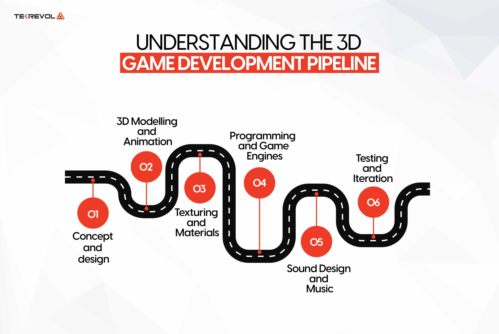

Gameloop
Espaço feito para aqueles que querem começar a criar jogos


Bem-vindo ao nosso Fórum de Desenvolvimento de Jogos, um espaço criado para estudantes, entusiastas e
profissionais que querem
trocar experiências sobre criação de jogos. Aqui, qualquer pessoa pode perguntar, compartilhar dúvidas técnicas
e contribuir com
uma resposta às questões dos outros membros.
Nosso fórum foi criado para incentivar a colaboração e
aprendizado contínuo,
aqui você encontrará ranking dos tópicos mais discutidos, uma dashboard com KPI's essenciais e um ambiente para
você encontrar
ideias para melhorar seus projetos.
Desde muito jovem os jogos fizeram parte da minha vida. Comecei a adentrar nesse mundo por volta dos 8 anos
quando passava horas explorando o Wii e Nintendo DS. Conforme fui crescendo, fui migrando de jogo em jogo
onde encontrei comunidades que me acolheram e pessoas que jogaram várias horas comigo na Pandemia.
Nesse cenário, comecei a me interessar pelo processo de desenvolvimento, estudando ferramentas, conceitos e
participando de game jams voltadas à criação de jogos.
Essas experiências me permitiram entender o que
existe por trás dos projetos: desde a ideia inicial até a implementação técnica. Participar de game jams foi
marcante pois me mostrou como o processo de desenvolvimento, mesmo que trabalhoso, era divertido e prazeroso
com as pessoas certas.
Os jogos se tornaram uma parte fundamental da minha vida, pois com eles descobri
o prazer de criar projetos colaborativos e esse interesse me acompanha até hoje, moldando meu estilo de vida.


Minha participação em game jams surgiu pela minha curiosidade sobre o processo criativo por trás dos jogos.
Depois de anos explorando diferentes mecânicas, senti vontade de compreender como transformar ideias em
jogos digitais, e os game jams se tornaram um ambiente ideal para isso. Desenvolver jogos dentro de 48
horas com uma equipe comprometida acelera o aprendizado de forma especial, pois ele testa nossos limites
e nos faz descobrir novas visões de solucionar problemas.
Mais do que competir, participar de game jams
me conectou com pessoas igualmente apaixonadas por criação de jogos e comprometidas com a qualidade. A troca de
ideias,
tomadas de decisões rápidas e o apoio coletivo para criar um projeto reforçaram ainda mais minha vontade de
seguir
aprendendo sobre tecnologia. Por isso, os game jams não foram apenas eventos pontuais, mas sim experiências que
aumentaram meu desejo de aprender tecnologias novas e desenvolvimento de projetos inovadores.
Para desenvolver um jogo, principalmente em 3D, seguimos um conjunto de etapas: tudo começa na fase de conceito e design, onde surgem a história, a estética e as mecânicas principais. Em seguida, parte-se para a modelagem e animação 3D, responsável por criar personagens, objetos, cenários e todos os elementos visuais do mundo do jogo. Com os modelos prontos, entra a etapa de texturização de materiais que adiciona cores e superfícies que tornam tudo mais realista. Depois, o foco vai para a programação e uso de engines, onde o jogo ganha vida: sistemas, controles, física e lógica começam a funcionar de verdade. A parte auditiva é construída na criação de sons e trilhas musicais, essenciais para reforçar imersão. Por fim, todo o conjunto passa por testes para garantir que tudo esteja funcionando em conjunto.

Fonte: Tekrevol